A 25-day, on-campus research workshop in computer vision — from classical face detection to a real-time facial-expression and sign-language system. Our Group 5 project, Real-Time Video Analysis and Rendering, was awarded the Third Prize of the course.
The NUS School of Computing Summer Workshop is a flagship programme that pairs frontier theory with intensive, supervised project development. I enrolled in Visual Computing and spent the second phase on campus building a real-time vision system with three teammates.
Run by the School of Computing, National University of Singapore — Asia's leading university (QS 2026 World Rank #8, Computer Science Rank #4).
A 4-credit-equivalent course (130 contact hours) covering real-time image analysis, detection, tracking and rendering, assessed through assignments, quizzes and a team project.
Phase 1 (9–24 May): six online teaching days across three weekends. Phase 2 (6–30 July): 25 days of in-person research at the NUS SoC campus, Singapore.
Four undergraduates from three universities — Zhejiang University, Northwestern Polytechnical University and Ho Chi Minh City University of Technology (VNU-HCM).
A webcam-driven pipeline that detects faces and bodies, recognises expressions and sign-language gestures, and renders live visual effects — branded SignVerse.
Awarded the Third Prize of the Visual Computing course project competition, with a final course performance of A on the official NUS performance slip.
The workshop is split into two phases. In the first, students choose a cluster and complete foundational coursework online; in the second, they travel to Singapore for 25 days of supervised, hands-on research and finish with a project presentation and competition judged by faculty.
What made it valuable was the density: lectures in the morning, lab and project work after, weekly check-ins with professors and teaching assistants, and a final demo day where every group pitched and defended their work.
Official programme website: sws.comp.nus.edu.sg
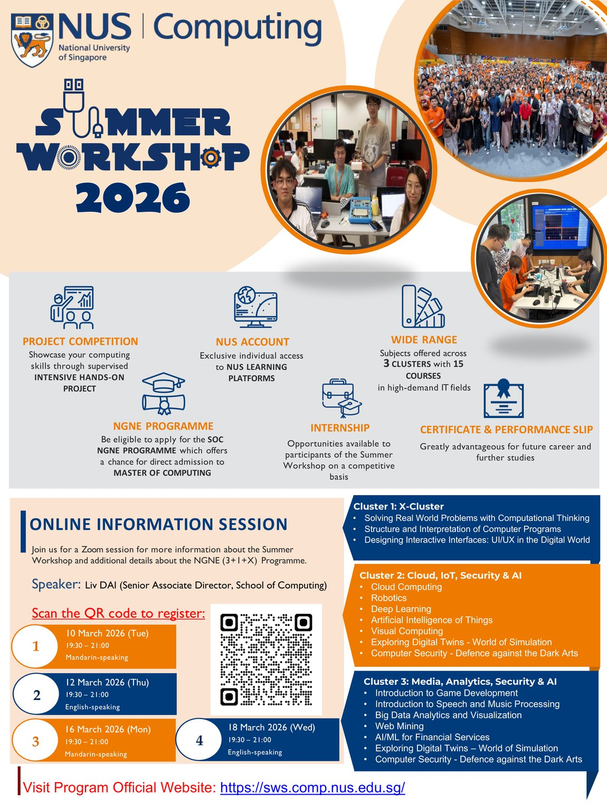
Showcase your computing skills through a supervised, intensive hands-on project.
Exclusive individual access to NUS learning platforms and course material.
Three clusters with fifteen courses in high-demand IT fields.
Top performers may apply for the SoC NGNE programme and direct admission to the Master of Computing.
Outstanding students can be considered for internships at the School of Computing on a competitive basis.
A certificate and official performance slip, valuable for future study and career applications.
Group 5's entry into the Visual Computing project competition. We built a single webcam-driven system that analyses a live video stream and renders responses in real time — then gave it a purpose: accessible communication.
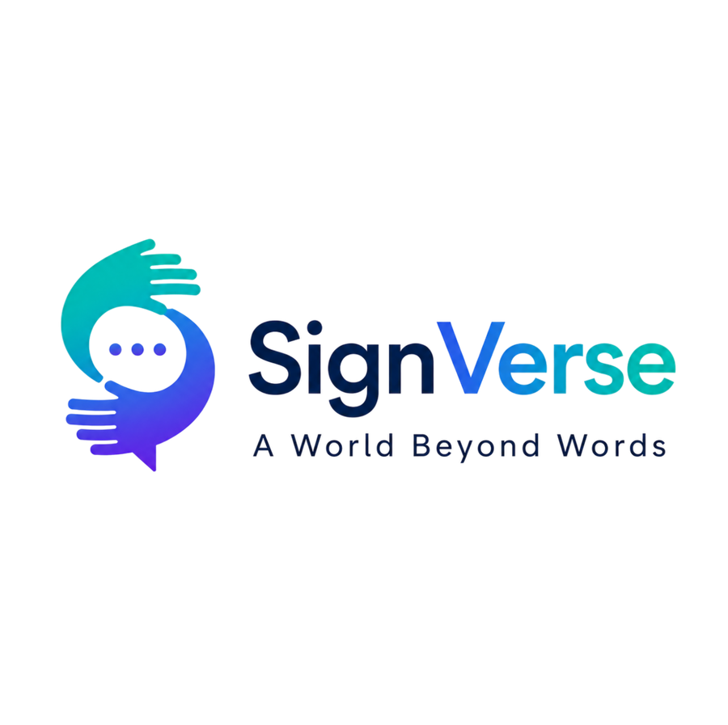
Everything we learned across three difficulty levels converged into a single product concept: SignVerse — a real-time interface that lets Deaf and hard-of-hearing users communicate with an AI through sign language, and lets AI respond visually.
SignVerse lets Deaf and hard-of-hearing users talk to AI in sign language — creating a more natural, independent and accessible digital experience.
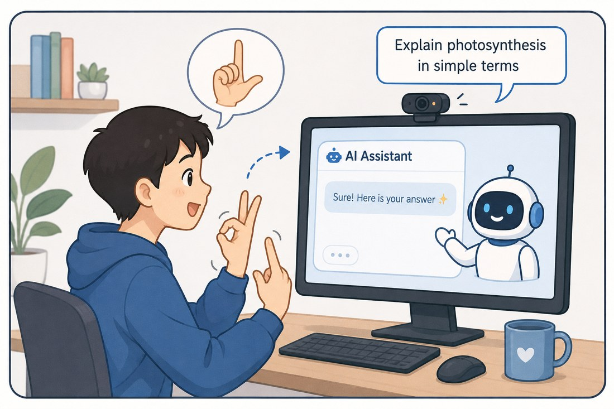
Why classical Haar + LBF detection breaks down — and what a lightweight deep-learning detector fixes.
A hybrid model that fuses CNN appearance features with geometric landmarks to read seven emotions, then renders them.
Pose-based dancer tracking, an explainable dance scoring engine, and a game you play with your hands.
The presentation was delivered on 28 July 2026 as Group 5 — presented by Yufeng Tang and Tri H. Trinh, with contributions across model design, experiments, application development, testing and video production.
Every group presented a single poster at the closing showcase. Ours compresses all three levels — face detection, the hybrid expression model, real-time video effects, dancer recognition and scoring, and the SignVerse application — into eight panels.
Group 5 · Visual Computing · NUS SOC Summer Workshop 2026
Haar + LBF versus YuNet + MediaPipe under rotation, lighting and occlusion.
FACN landmarks and geometric features fused into a seven-class MLP.
Confusion matrix and class-centroid similarity for Local, Geo and Hybrid features.
Seven emotions mapped to rendered effects, with a supportive chat agent.
YOLOv8s-pose tracking with a score-based promote / evict tracker.
Pose 60% + Motion 25% + Timing 15%, aligned to the reference dance.
A slingshot game controlled by hand gestures.
MediaPipe Hands + DTW sign-language recognition for Deaf users.
Click the poster to open it at full size.
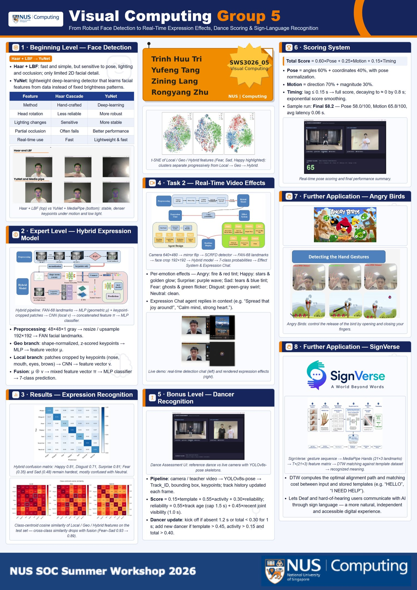
The system's front end had to find and track a face reliably, in real time, on a laptop webcam. We started with the classic Haar Cascade + LBF landmark approach and compared it against the modern, lightweight YuNet detector (with MediaPipe landmarks).
| Feature | Classical Haar Cascade | Deep learning YuNet |
|---|---|---|
| Method | Hand-crafted features | Deep-learning features |
| Head rotation | Less reliable | More robust |
| Lighting changes | Sensitive | More stable |
| Partial occlusion | Often fails | Better performance |
| Real-time use | Fast | Lightweight and fast |
Takeaway — the deep-learning detector kept tracking through rotated heads, uneven lighting and occlusions, at a speed that still allowed real-time use. That robustness is what made everything downstream possible.
The core research question: can we read emotion better by combining what a face looks like with how the face is shaped? We built a hybrid model that fuses local CNN appearance features with geometric landmark features, and evaluated it against each part alone.
SCRFD detector locates the face; a 192×192 crop is extracted and normalised (grayscale + normalisation).
Facial landmarks are located on the original image — eyes, brows, nose and mouth.
Regions cropped by keypoints are passed through a CNN to give an appearance feature vector μ.
Keypoint geometry is normalised (shape-norm and z-score) into a second feature vector ν.
μ and ν are concatenated into a mixed feature vector π and classified by an MLP into 7 classes.
Classes: Angry, Disgust, Fear, Happy, Sad, Surprise, Neutral.
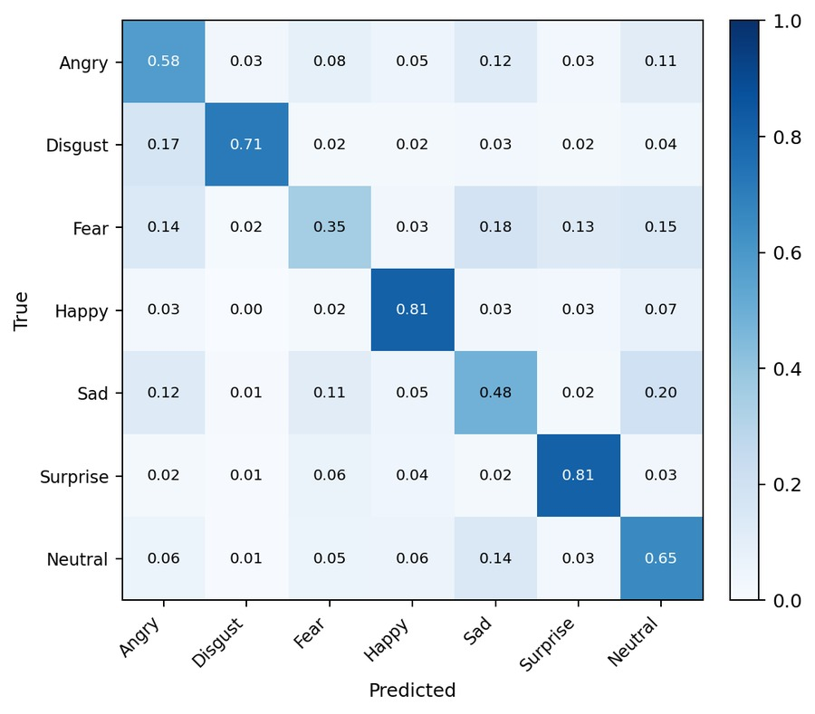
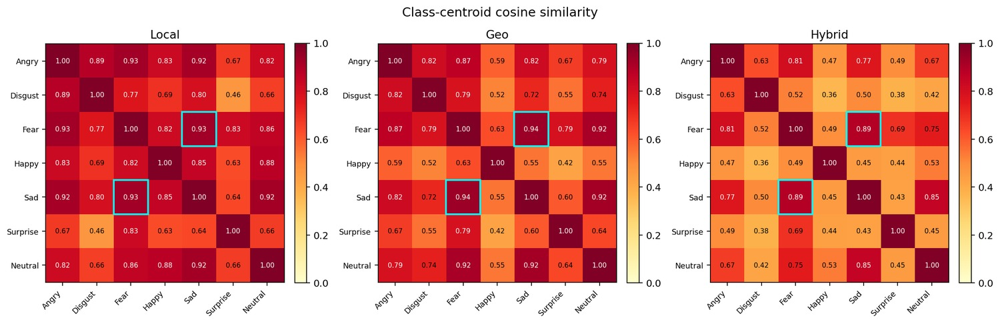
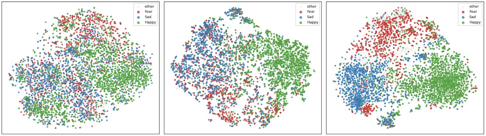
A prediction on its own is not an experience. We mapped each of the seven emotions to a real-time visual effect — the “rendering” half of Real-Time Video Analysis and Rendering.
The same emotion signal drives a chat agent that responds with the right kind of support, plus a realtime display layer.
Effect layer rendered over the live camera feed.
Conversational surface for the agent's guidance.
Loads and animates the assistant character.
Maps predicted emotion to an action or effect.
Angry plays a calming clip; Sad plays a song.
Mirror flip, face crop and normalisation before inference.
The bonus level pushed the same real-time pipeline into two harder problems: who is dancing, and how well are they dancing — then into a game you control with your hands.
YOLOv8s-pose provides per-frame bounding boxes, keypoints and a track ID. A three-step tracker then decides, over time, who is genuinely dancing.
Record each track's last-seen frame and register new tracks.
Template score (frame similarity), activity score (body speed) and reliability score (track age + joint visibility).
Add a dancer when the scores clear the thresholds; evict when motion drops out.
A teacher video is sampled at 15 FPS into a pose sequence, then aligned against the live performer with an optimal action-alignment search.
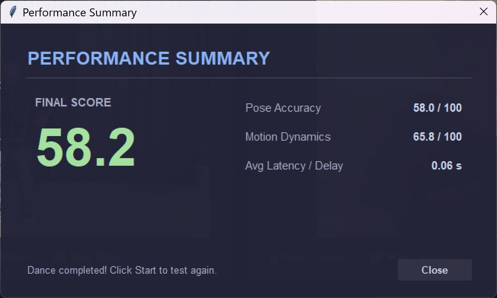
Finally we turned the pipeline into play. MediaPipe hand landmarks are tracked frame by frame; the detected open/closed hand state drives rotation control, and an Angry Birds-style slingshot responds to gestures instead of a mouse.
This level was about latency: the feedback loop only feels natural when detection, decision and rendering all stay inside a single frame budget.
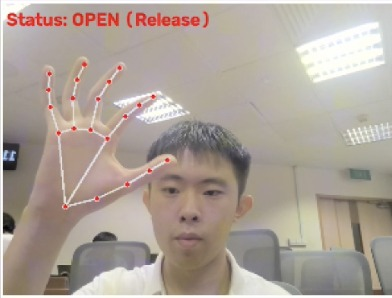
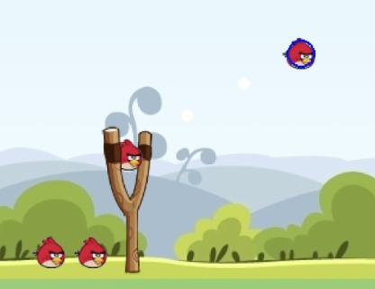
Technology is only worth what it unlocks for people. The final message of our project was simple: the same real-time video analysis that powers a demo can remove a real communication barrier.
SignVerse allows Deaf and hard-of-hearing users to communicate with AI through sign language, creating a more natural, independent and accessible digital experience.
By reducing communication barriers, SignVerse promotes digital inclusion and helps ensure that advances in AI are accessible to everyone — regardless of hearing ability.
Vocabulary recognised in the demo — short, practical phrases signed into the camera and matched against a reference gesture set.
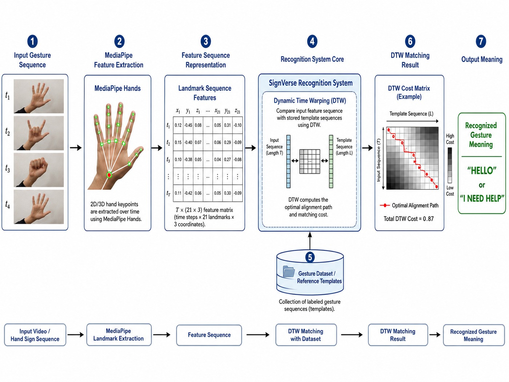
An input gesture sequence is processed by MediaPipe Hands into 2D/3D hand keypoints per frame.
Frames become a T × (21 landmarks × 3 coordinates) feature sequence over time.
Dynamic Time Warping compares the input against a gesture database, finds the optimal alignment path, and outputs the meaning — e.g. “HELLO” or “I NEED HELP”.
Every participant who completes both phases receives a certificate and an official performance slip. Individual and team excellence is recognised separately.
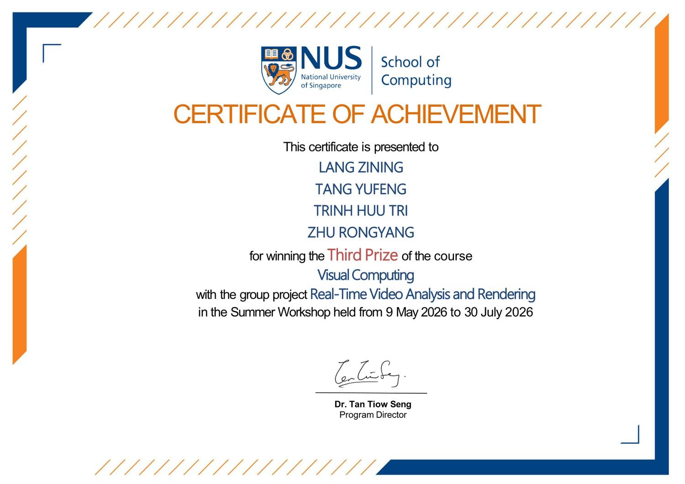
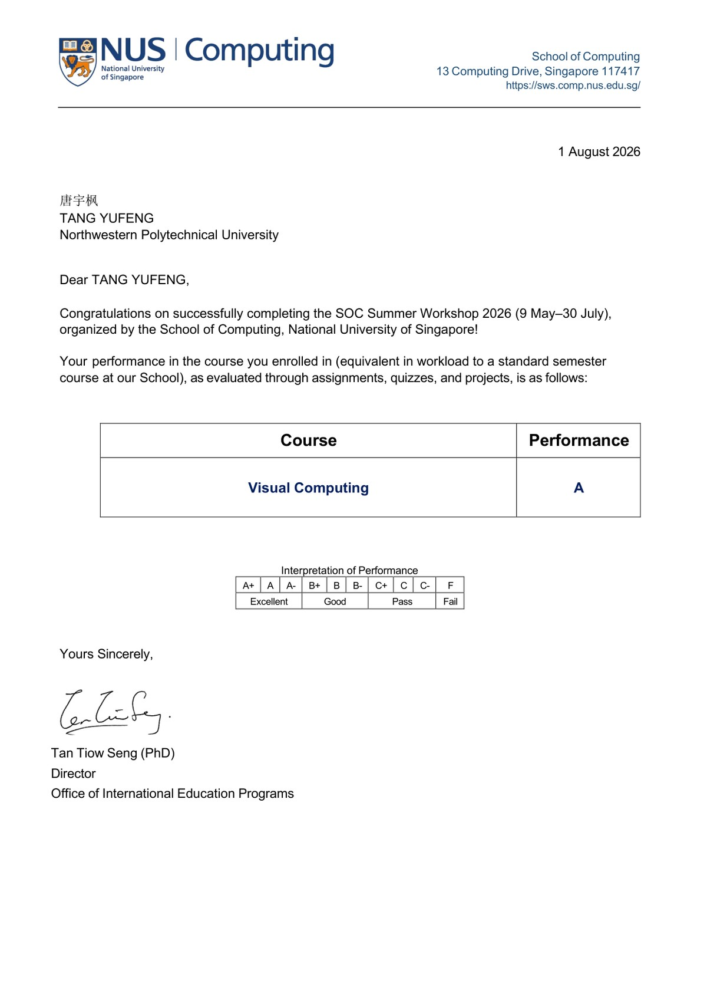
Awarded in the Visual Computing course project competition for Real-Time Video Analysis and Rendering, by a team of four.
Final course performance on the official performance slip, based on assignments, quizzes and the project.
Certificate of successful completion of the SOC Summer Workshop 2026 (9 May – 30 July), School of Computing, NUS.
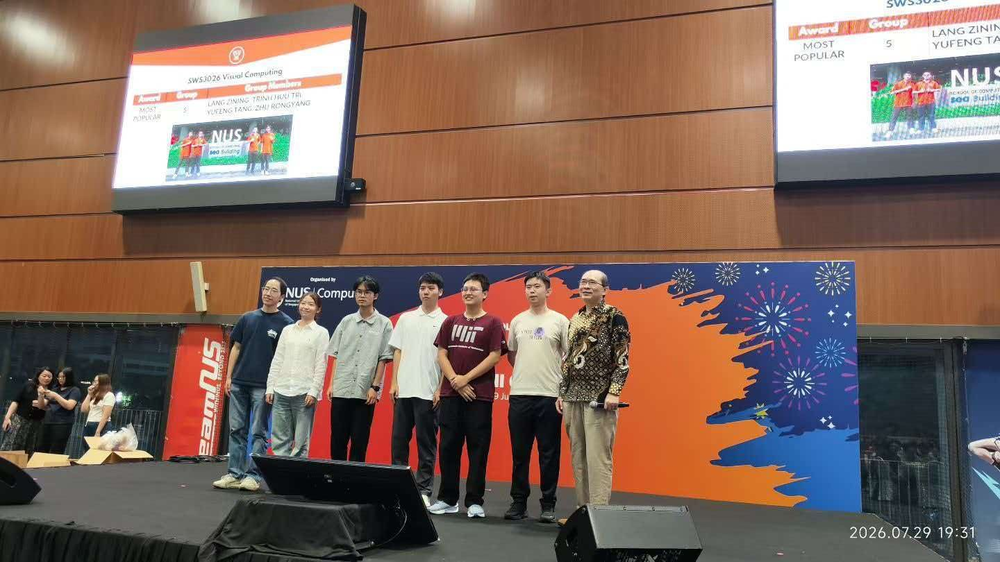
Four undergraduates from three universities, working across model design, experiments, application development, testing and presentation.
Interested in few-shot learning and action understanding — which is exactly what drew me to the expression-recognition and dance-scoring parts of the project.
Co-presenter of the final project and a driving force behind the implementation work.
Enjoys exploring new places and new ways of life — and brought that curiosity to the project.
Interested in travel and photography, and contributed to the project's visual and presentation work.
Three and a half weeks in Singapore: lecture halls and lab rooms, long build sessions, and a final demo day in a signature NUS orange polo shirt.
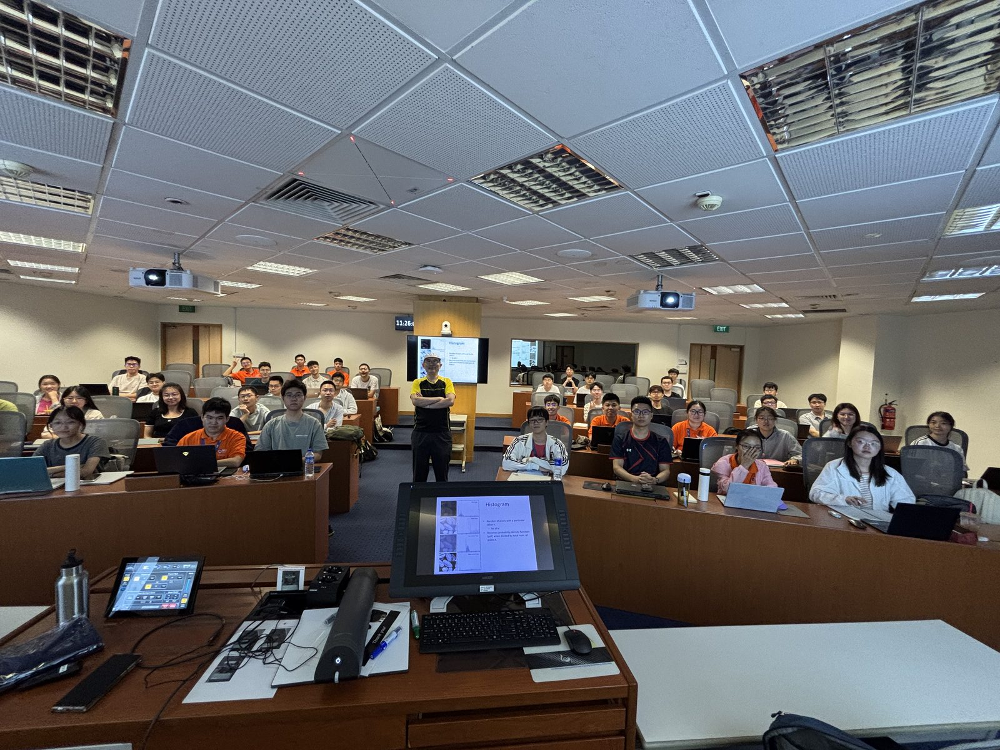
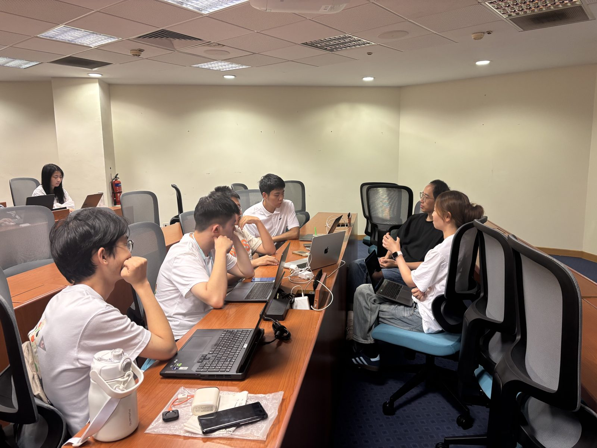
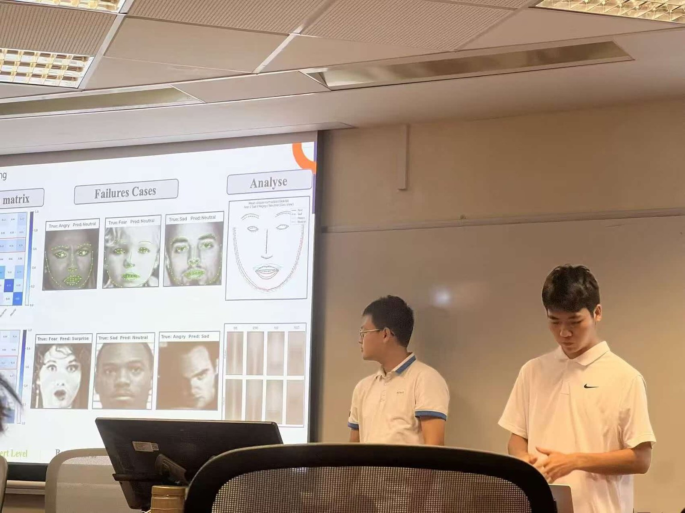
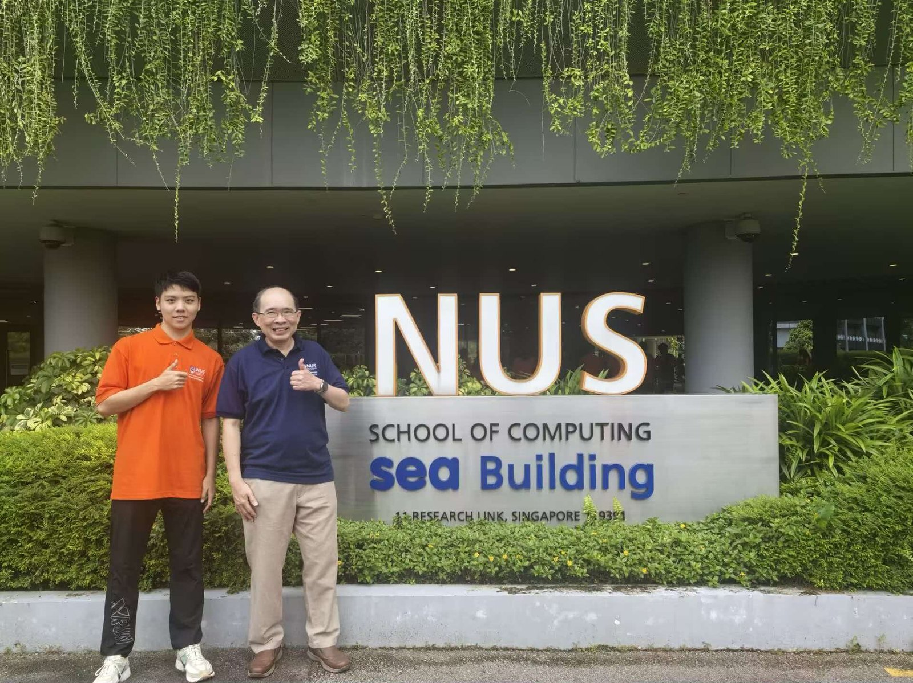
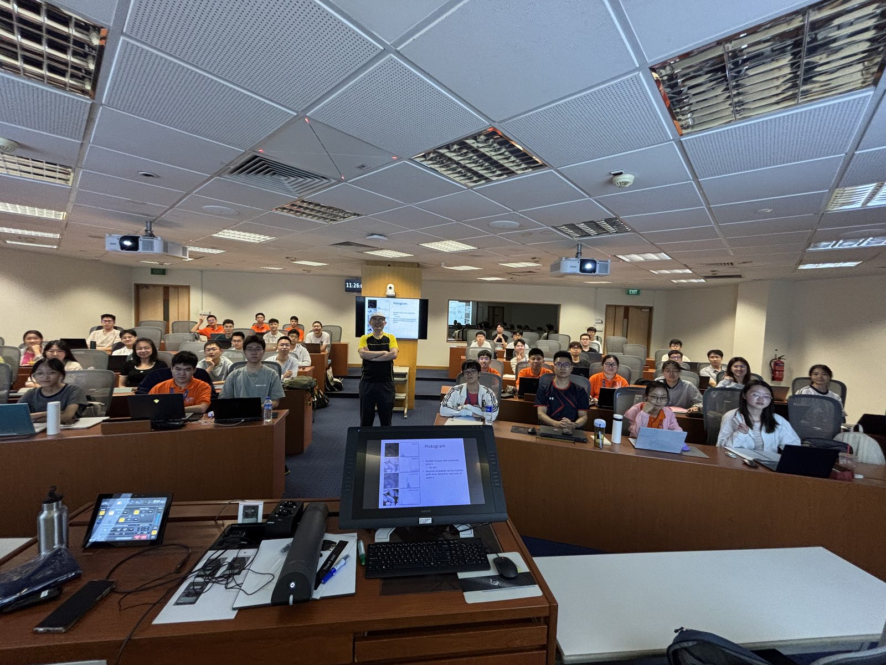
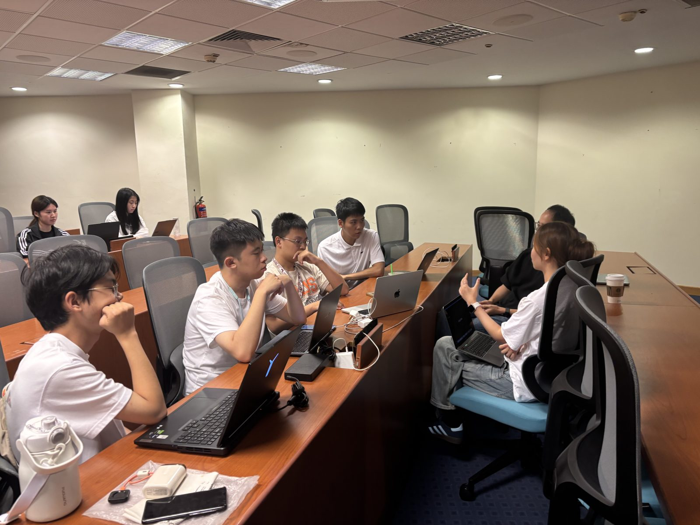
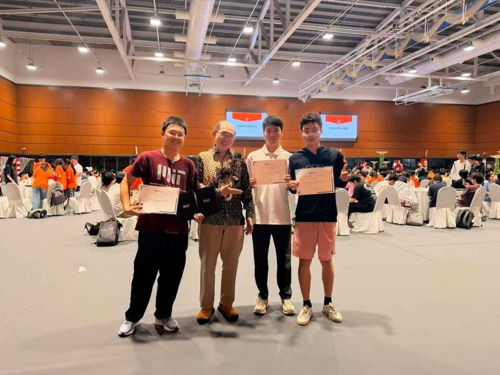
Beyond the certificate, the workshop changed how I think about building computer-vision systems under real constraints.
Every modelling choice had to survive a webcam and a frame budget. Latency shaped architecture more than accuracy did.
Benchmarking Haar against YuNet taught me to let the failure cases — rotation, lighting, occlusion — pick the method.
Combining appearance and geometric features, and reading them through heatmaps and t-SNE, showed me how hybrid models earn their keep.
The most motivating part was SignVerse: turning a technical demo into something that could widen access for Deaf and hard-of-hearing users.
Three and a half weeks, four teammates, three universities, one camera — and a much better sense of how to turn research models into systems that actually run.